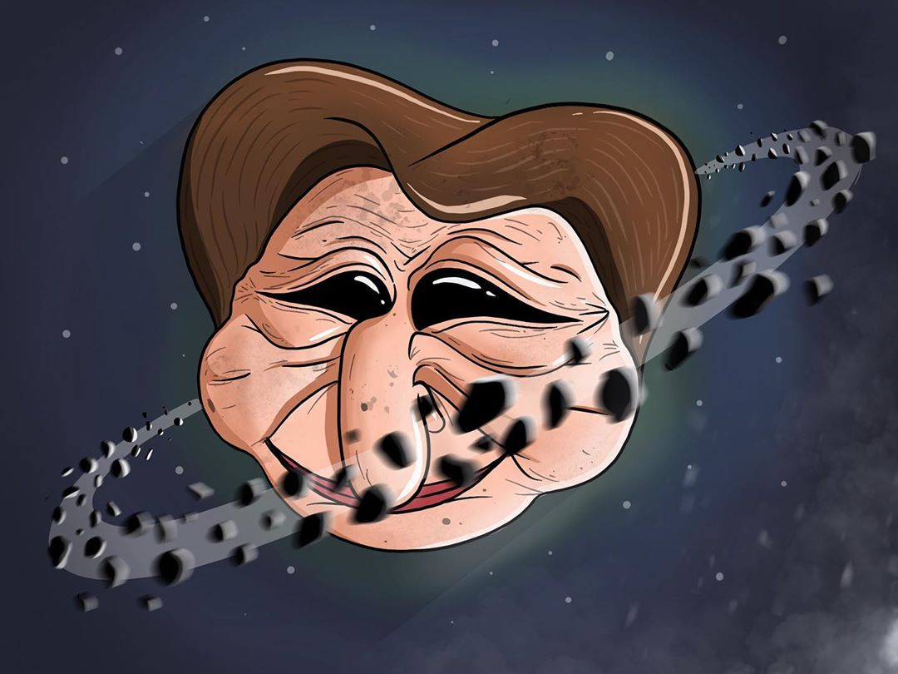

F R I T E MAN (UnE nOuVeLlE sTaR)
Friteman fait des ravages, depuis quelque temps les vendeurs de frites, ou les restaurants, fast-food, ont recourts à ses services
Oui ! Vous l'avez bien compris une sorte de superhéros fait son "coming out"
"Mé sais ki friteman ?"
Vous connaissez tous "Superman" un kryptonien, possédant des "super pouvoirs", ou encore "Spiderman" un humain utilisant des toiles d'araignées pour grimper
sur des immeubles. Tous ces héros n'existent que dans des bandes-dessinées et dans des films de science fiction.
Friteman, est une icône pour les vendeurs de frites, ou même pour les enfants.
Il n'est pas qu'une icône, c'est avant tout un superhéros !
"Mé comant y fé pour aitre 1 superhéros ?"
Très bonne question ! Friteman est le créateur de la "Frite originelle", la légende raconte, que le simple fait de goûter la frite, ou même de la sentir, pourrait tuer l'être le plus résistant sur terre.
Comme vous devez vous en douter, Friteman ne vient pas de notre "Terre", mais il vient d'une planète dont la forme de la planète ressemble à une tête humaine.
En voici une illustration :
Attention !

J'espère que notre jeune public n'aura pas été choqué...
Si cette planète a cette forme, ce n'est pas pour rien...
Selon Friteman, il est parti de sa planète originelle, pour fuir le dictateur de sa planète.
C'est le dictateur lui-même qui a ordonné à un groupe de fritiens (habitants de cette planète) de remodeler la planète à son effigie.
Mais les fritiens, voulant faire une blague, l'ont dessiné tel qu'il était, mais ne se trouvant pas jolie, et n'aimant pas cette blague, il décida de rendre la situation pire.
Le dictateur de Friteland (nom de la planète), a décidé d'interdire les frites à l'ensemble de la population, sauf à lui et à son entourage.
C'est pour cette raison que Friteman a décidé de fuire la planète, pour fuire le dirigeant, mais aussi pour que le savoir de la fabrication de la frite se préserve.
Quelques lignes plus haut, je vous ai parlé de la frite originelle, il n'en est pas l'inventeur sur sa planète, mais il l'est bien sur la nôtre.
Lors de sa fuite vers notre planète, Friteman a emporté une frite pour en reproduire d'autres.
Hélas cette frite, quelques mois après l'invention des frites sur Terre, fu volée.
Afin de ne pas finir cet article sur cette triste image, revenons à nos frites...
Restaurants, Enseignes de fast-food, vendeurs de frites, l'utilisent comme mascotte.
Friteman serait lui-même en train de faire la mascotte.